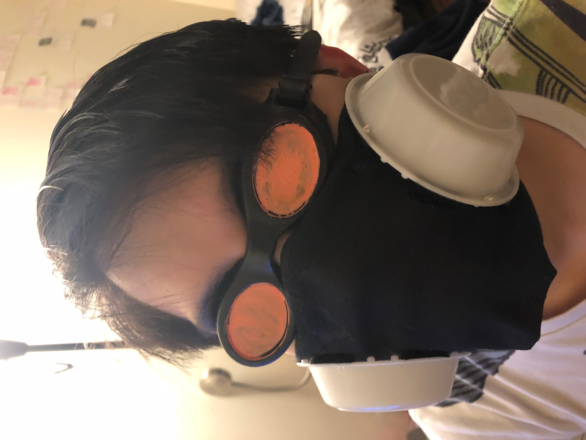

CONTEXT
This mini-documentary was released on January 23rd, 2041, and provides historical context that will allow you to see evidence and important chronological information.
This mini-documentary was released on January 23rd, 2041, and provides historical context that will allow you to see evidence and important chronological information.
Society has become a shell of what it once was. After the war, people outside the main, well-off cities struggled to survive and were forced to constantly wear masks outside out of fear of swarms and toxins.
In cities, life is difficult but possible. If you are rich and have power, you'll be alright. If not, at least you're in the city where there are more buildings to protect you from swarms. The slow death of trees and other plants around the world is still visible to the privileged, though. As food is extremely expensive.

Masks are now everywhere. People need them. The rich wear fancy, high-tech masks while the poor cover up
with what they can. A culture grew around masks. As the swarms got worse, goggles were needed. The world changed.